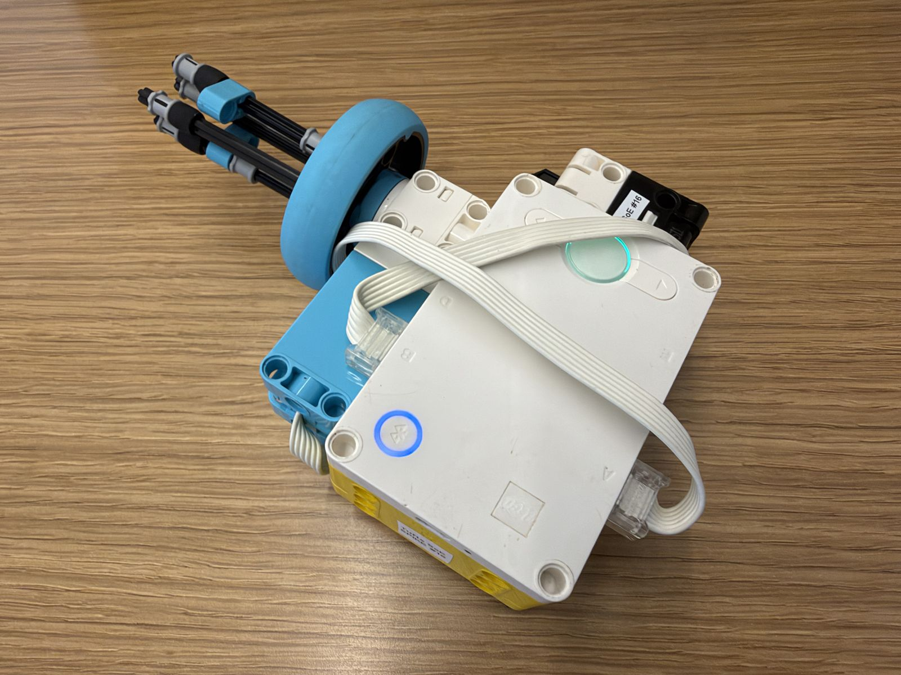
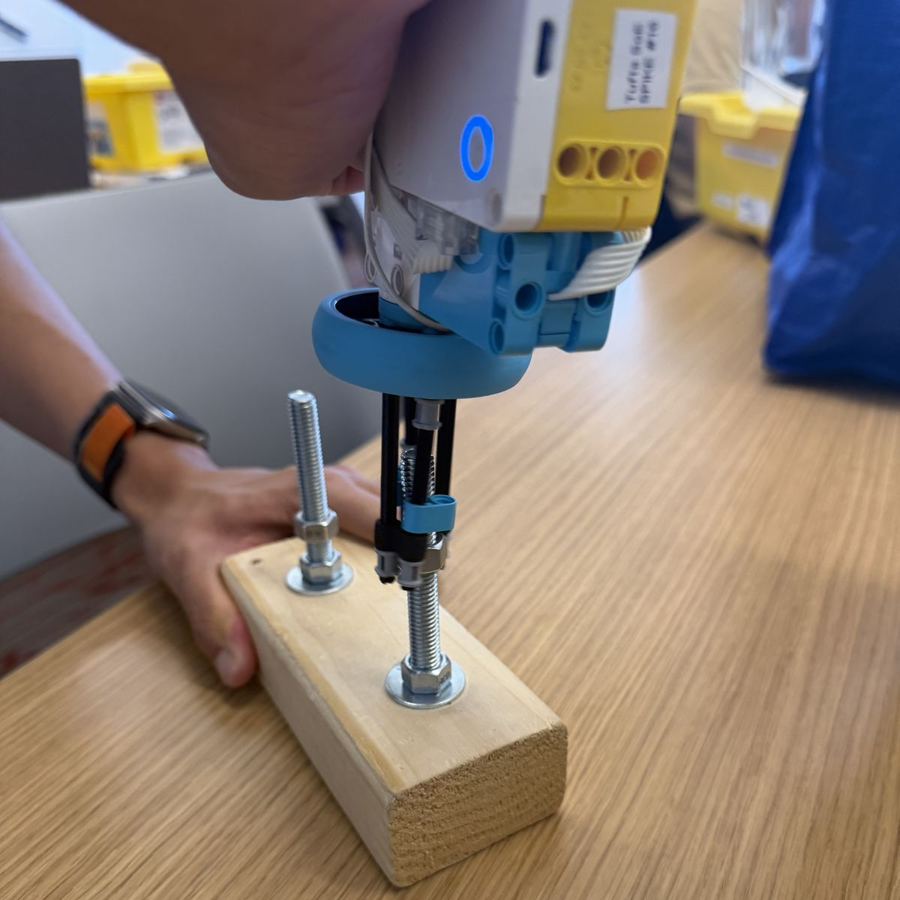

The Astronaut Tools challenge was to build a tool that helps an astronaut do a task during a spacewalk (EVA). The tool had to unscrew a nut from one bolt, move it to a second bolt, and screw it back on, without letting go of the nut at any point, because a dropped nut would float away in zero gravity. It also had to work with one hand, with either the left or the right hand, while wearing bulky gloves that stand in for space gloves.
I built a gun-style screwdriver. The SPIKE Prime hub is the handle, a Force Sensor on port A is the trigger, and a Medium Motor on port B turns a socket made of long LEGO axles that fits over the nut.
My Python program checks the trigger every 20 ms and sets the motor speed from how hard I press: the harder I press, the faster the socket spins, up to 1100 degrees per second. Releasing the trigger stops the motor. Tapping the trigger three times quickly (within 0.8 seconds) switches the motor’s direction, so the same trigger can both unscrew and screw the nut.

In testing, my screwdriver unscrewed the nut, moved it to the other bolt, and screwed it on without dropping it. It worked while I wore bulky gloves, one-handed with my left hand and with my right hand, and with the block held vertical, horizontal, and upside down.
# Setup: Force Sensor on port A and Medium Motor on port B.
from hub import port
import runloop
import motor
import force_sensor
# Set the motor's maximum speed in degrees per second.
MAX_SPEED = 1100
# A press must reach this force to count as a tap.
PRESS_THRESHOLD = 5
# All three taps must happen within this many milliseconds.
TAP_WINDOW_MS = 800
async def main():
# Start in anticlockwise direction.
direction = -1
# Keep track of taps and whether the sensor is currently pressed.
tap_count = 0
sensor_was_pressed = False
time_since_first_tap = 0
# Repeatedly check the force sensor and control the motor.
while True:
# Read the force sensor's current pressure.
force_amount = force_sensor.force(port.A)
sensor_is_pressed = force_amount >= PRESS_THRESHOLD
# Count a tap only when the sensor changes from released to pressed.
if sensor_is_pressed and not sensor_was_pressed:
if tap_count == 0:
time_since_first_tap = 0
tap_count = tap_count + 1
# Three quick taps switch the motor's direction.
if tap_count == 3:
direction = direction * -1
tap_count = 0
time_since_first_tap = 0
# Remember the press state so a held press is not counted repeatedly.
sensor_was_pressed = sensor_is_pressed
# Discard an unfinished tap sequence if it takes too long.
if tap_count > 0:
time_since_first_tap = time_since_first_tap + 20
if time_since_first_tap > TAP_WINDOW_MS:
tap_count = 0
time_since_first_tap = 0
# Scale the force reading to a speed no greater than 1100.
motor_speed = force_amount * 11
if motor_speed > MAX_SPEED:
motor_speed = MAX_SPEED
# Run in the selected direction, faster when more force is applied.
motor.run(port.B, direction * motor_speed)
# Pause briefly before checking again.
await runloop.sleep_ms(20)
runloop.run(main())